Engine: Service and Repair
Engine RemovalSpecial Tools:
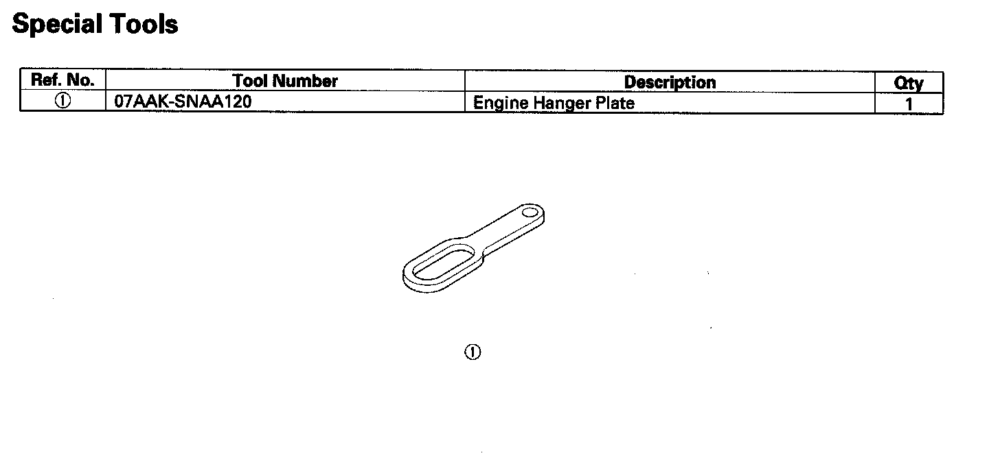
Special Tools Required
^ Engine hanger plate 07AAK-SNAA120
^ Engine hanger adapter VSB02C000015 *
^ Front subframe adapter VSB02C000016 *
^ 2006 Civic engine hanger VSB02C000025 *
^ Engine support hanger, A and Reds AAR-T-12566 *
* : Available through Honda Tool and Equipment Program, 1-888-424-6857
NOTE:
^ Use fender covers to avoid damaging painted surfaces.
^ To avoid damaging the wiring and terminals, unplug the wiring connectors carefully while holding the connector portion.
^ Mark all wiring and hoses to avoid misconnection. Also, be sure that they do not contact other wiring or hoses, or interfere with other parts.
1. Make sure you have the anti-theft code for the audio system and the navigation system (if equipped), then write down the audio presets.
2. Secure the hood in the wide open position (support rod in the lower hole).
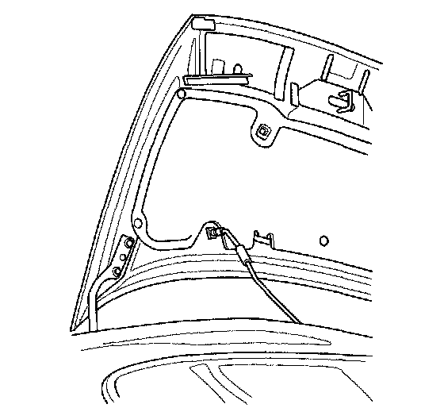
3. Relieve the fuel pressure.
4. Disconnect the negative cable from the battery first, then disconnect the positive cable.
5. Remove the battery.
6. Remove the air cleaner assembly.
7. Remove the under-cowl panel.
8. Disconnect the connector (A), and remove the harness clamp (B), then remove the resonator (C).
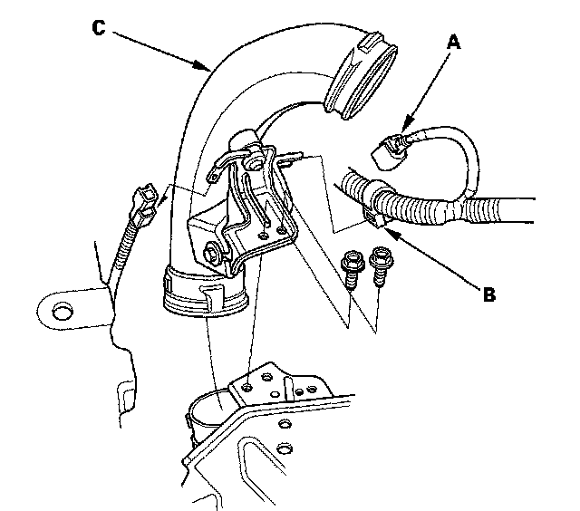
9. Remove the battery cables (A) from the under-hood fuse/relay box.
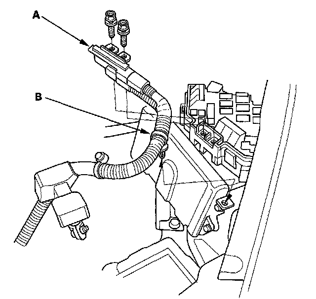
10. Remove the harness clamp (B).
11. Remove the engine control module (ECM) cover (A), then remove the three bolts (B) securing the ECM.
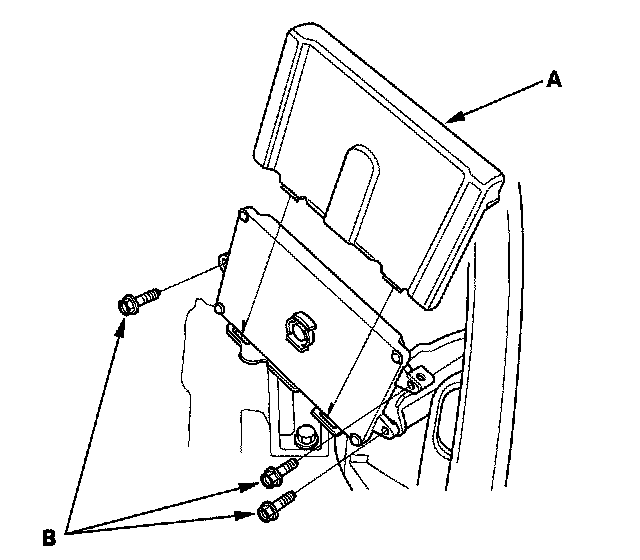
12. Disconnect the ECM connectors (A) and the engine wire harness connector (B).
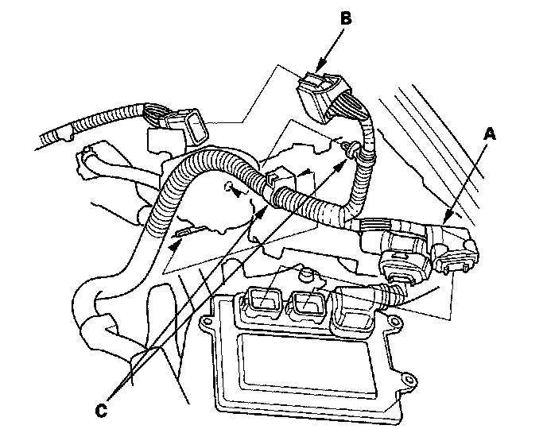
13. Remove the harness clamps (C).
14. Remove the engine cover.
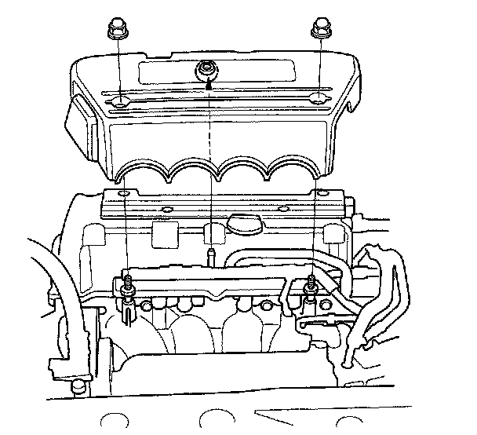
15. Remove the evaporative emission (EVAP) canister hose (A) and brake booster vacuum hose (B).
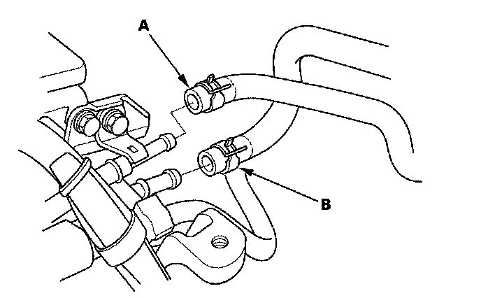
16. Remove the quick-connect fitting cover (A), then disconnect the fuel feed hose.
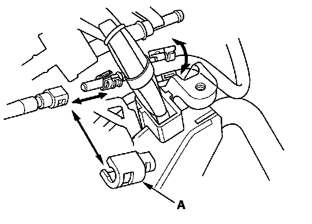
17. Remove the shift cable.
18. Remove the clutch slave cylinder, and clutch line bracket mounting bolt.
19. Remove the air cleaner housing bracket.
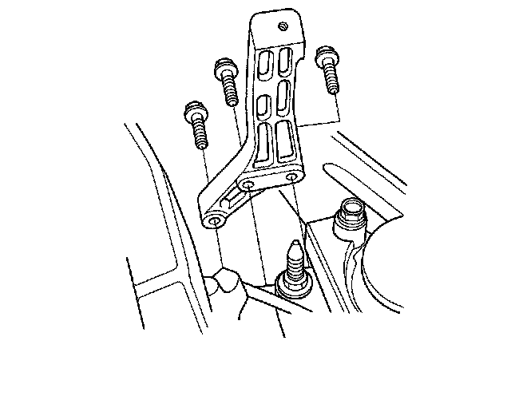
20. Remove the drive belt.
21. Remove the radiator cap.
22. Raise the vehicle on the lift to full height.
23. Remove the front wheels.
24. Remove the splash shield.
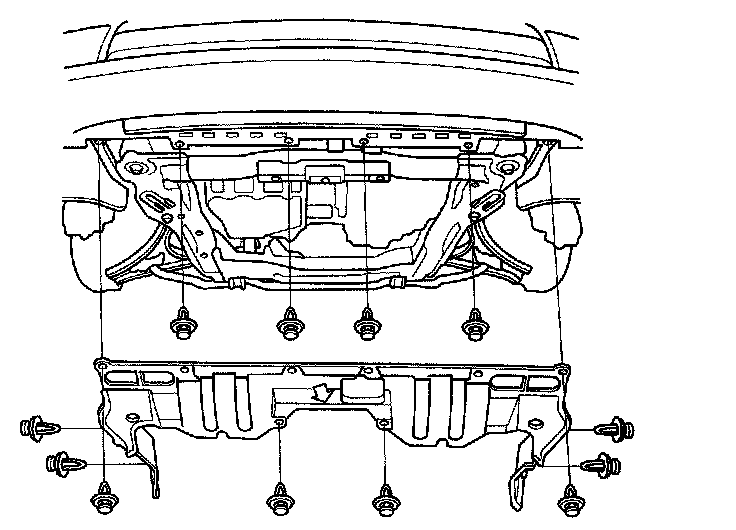
25. Loosen the drain plug in the radiator, and drain the engine coolant.
26. Drain the engine oil.
27. Drain the transmission fluid.
28. Disconnect the air fuel ratio (A/F) sensor connector (A).
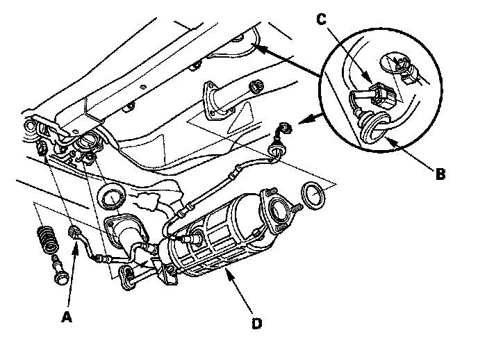
29. Remove the grommet (B), then disconnect the secondary heated oxygen sensor (secondary H02S) connector (C).
30. Remove the three way catalytic converter (TWC) (D).
31. Separate the stabilizer links.
32. Separate the knuckles from the lower arms.
33. Remove the driveshafts. Coat all precision-finished surfaces with clean engine oil. Tie plastic bags over the driveshaft ends.
34. Remove the steering gearbox bracket (A).
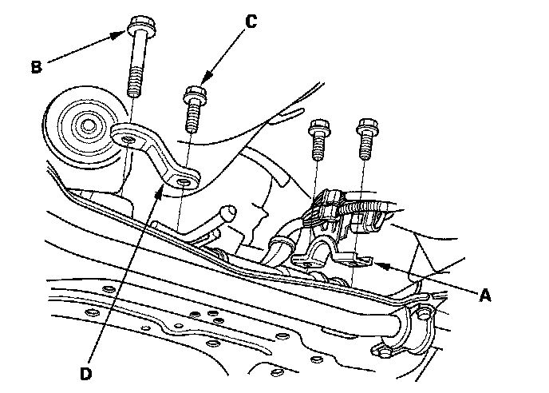
35. Remove the steering gearbox mounting bolt (B), stiffener mounting bolt (C), and stiffener (D).
36. Remove the steering gearbox mounting bolt (A), stiffener mounting bolt (B), and stiffener (C).
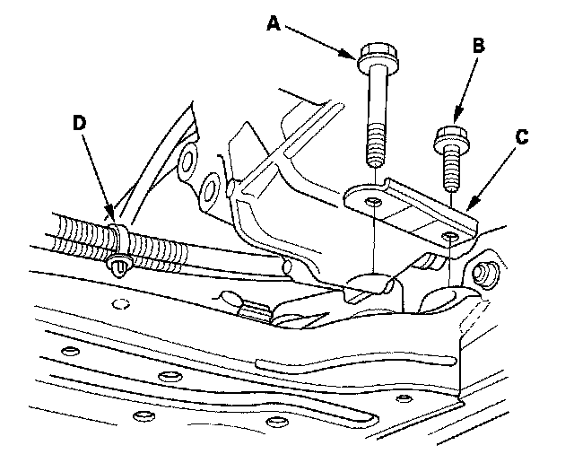
37. Remove the harness clamp (D) from the subframe.
38. Disconnect the A/C compressor clutch connector (A), then remove the A/C compressor (B) without disconnecting the A/C hoses.
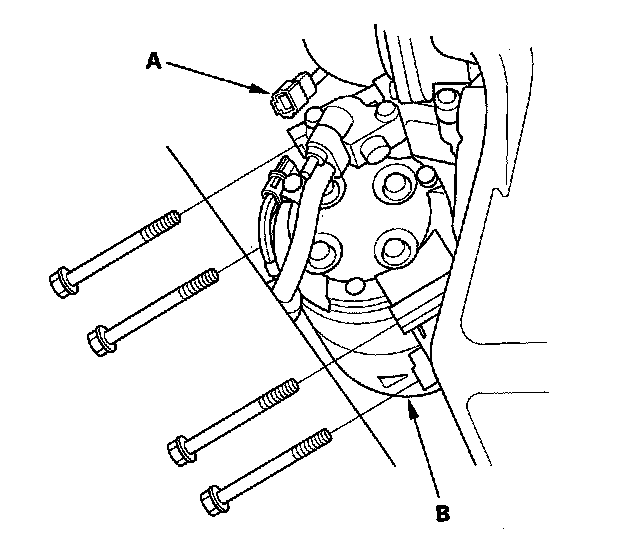
39. Lower the vehicle on the lift.
40. Remove the radiator.
41. Remove the heater hoses.
42. Install the bulkhead, and tighten the mounting bolts to 9.8 N-m (1.0 kgf-m, 7.2 lbf-ft).
43. Attach the special tool to the threaded hole in the cylinder head.
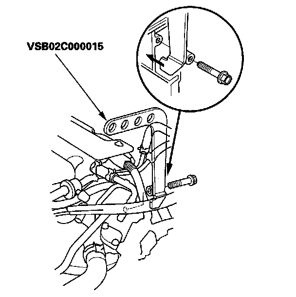
44. Install the front leg assembly (A), hook (B), and wing nut (C) from an A and Reds engine support hanger (AAR-T-12566) onto the engine hanger. Carefully position the engine hanger on the vehicle, and attach the hook to the forward hole in the engine hanger adapter (D). Tighten the wing nut by hand to lift and support the engine/transmission.
NOTE: Be careful when working around the windshield.
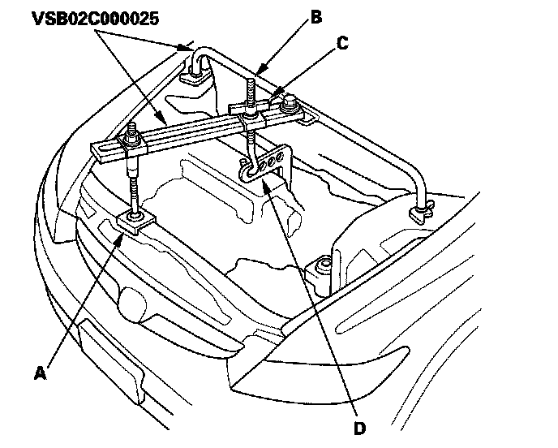
45. Raise the vehicle on the lift to full height.
46. Remove the lower torque rod.
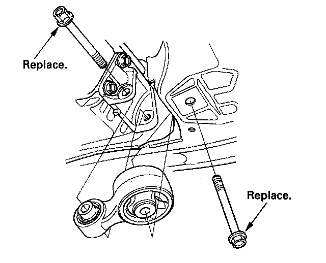
47. Remove lower radiator hose from the clamp (A), then remove the front mount mounting bolt (B).
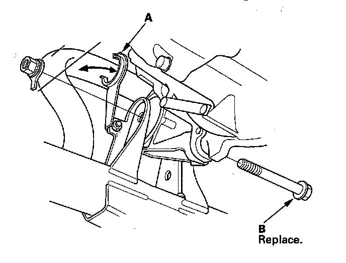
48. Note the reference marks (A) on both sides of the front subframe that line up with the body (B).
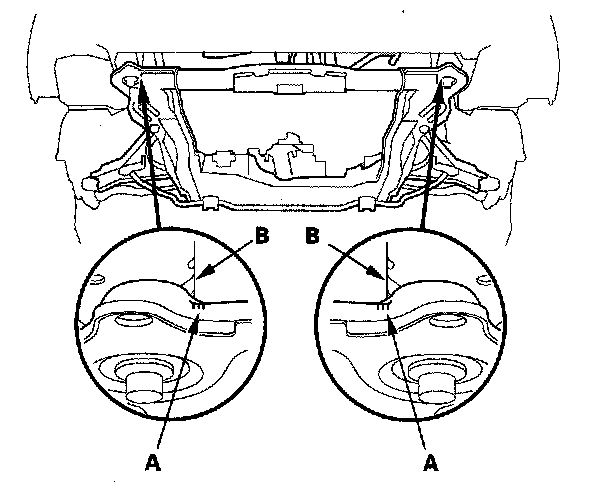
49. Loosen the front subframe body mount bracket mounting bolts (A) on both side.
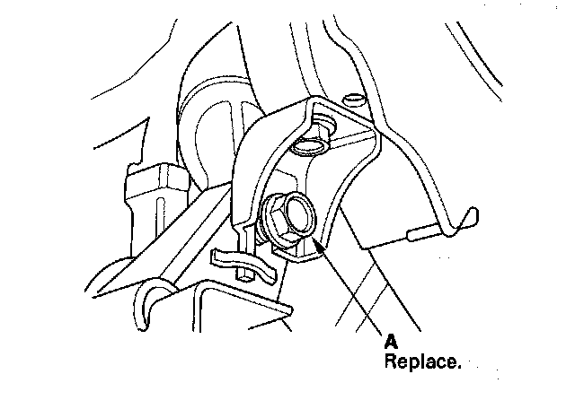
50. Attach the front subframe adapter (A) to the front subframe and hang the belt of the front subframe adapter over the front of the front subframe, then secure the belt with its stop.
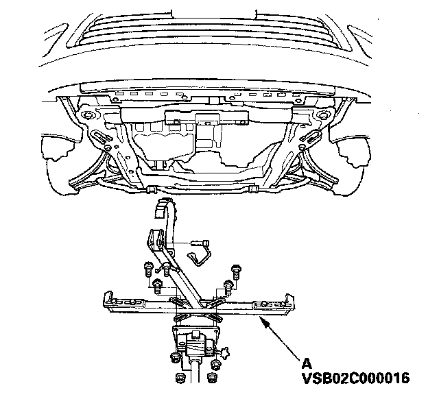
51. Raise the jack and line up the slots in the arms with the bolt holes on the corner of the jack base, then attach them with bolts securely.
52. Remove the front subframe.
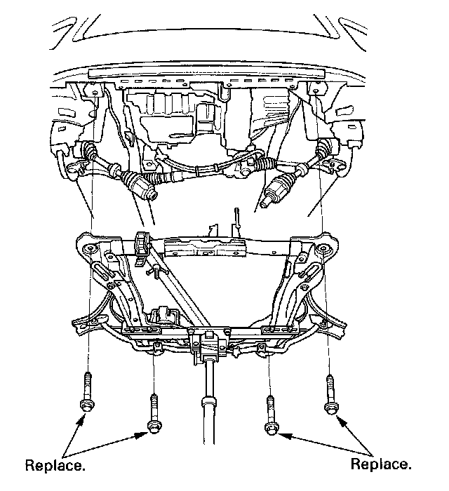
53. Lower the vehicle on the lift.
54. Remove the idler pulley base.
55. Install the special tool.
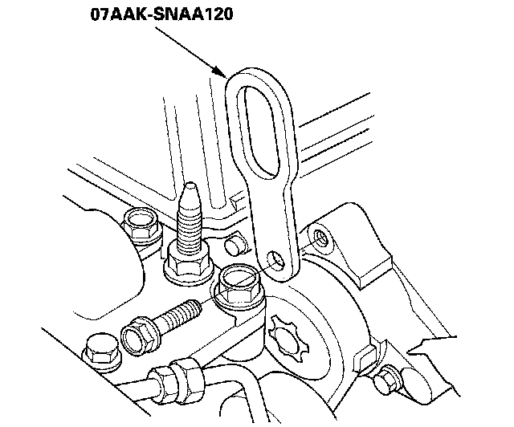
56. Attach a chain hoist (A) to the special tool (B), and the transmission hook (C). Lift up on the engine/transmission until it's securely supported by the chain hoist, and remove the engine hanger.
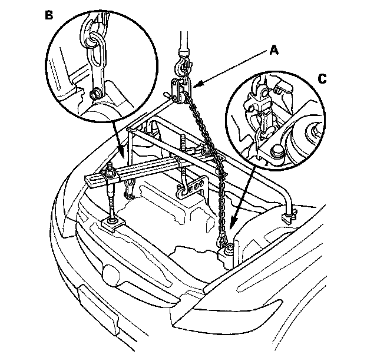
57. Remove the side engine mount bracket mounting bolt and nut.
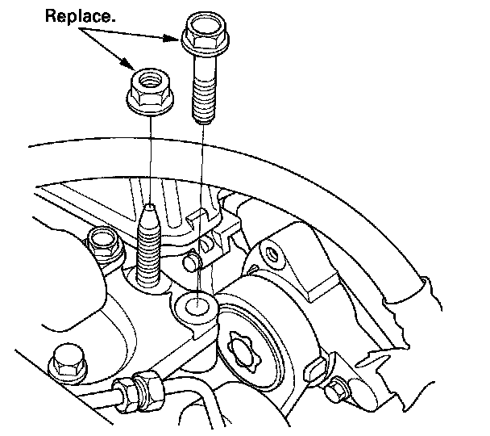
58. Remove the transmission mount bracket mounting bolt and nuts.
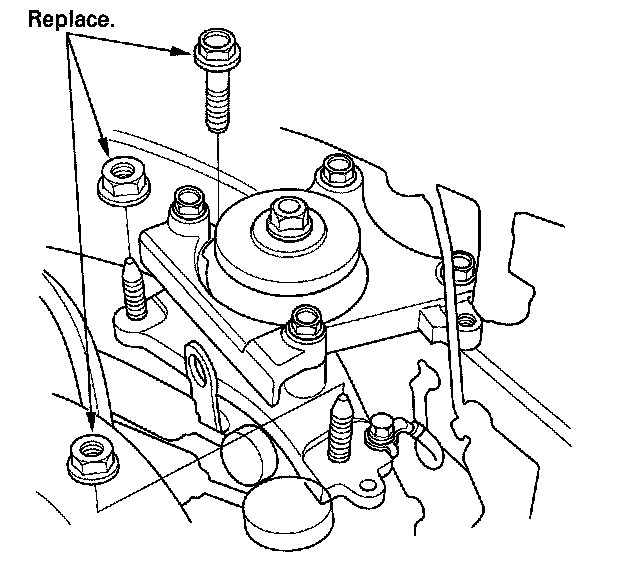
59. Check that the engine/transmission is completely free of vacuum hoses, fuel and coolant hoses, and electrical wiring.
60. Slowly lower the engine/transmission about 150 mm (6 in.). Check once again that all hoses and electrical wiring are disconnected and free from the engine/transmission, then lower it all the way.
61. Disconnect the chain hoist from the engine/transmission.
62. Raise the vehicle all the way on the hoist, and remove the engine/transmission from under the vehicle.
Engine Installation
Special Tools Required
^ Engine hanger plate 07AAK-SNAA120
^ Engine hanger adapter VSB02C000015 *
^ Front subframe adapter VSB02C000016 *
^ 2006 Civic engine hanger VSB02C000025 *
^ Engine support hanger, A and Reds AAR-T-12566 *
* : Available through Honda Tool and Equipment Program, 1-888-424-6857
1. Install the accessory brackets and tighten their bolts to the specified torques.
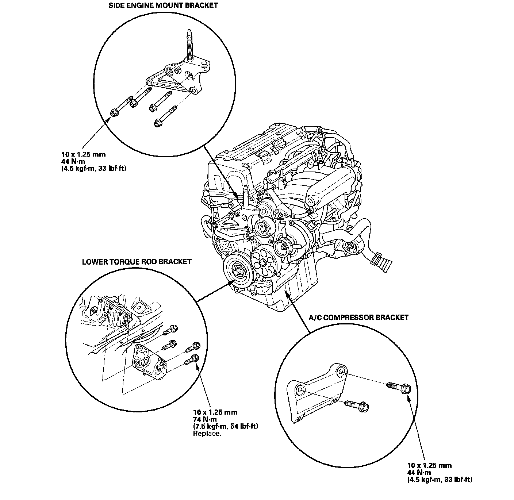
2. Raise the vehicle on the hoist, and position the engine/transmission under the vehicle. Lower the vehicle, and attach the special tool and chain hoist to the engine, then lift the engine into position in the vehicle.
NOTE: Reinstall the mounting bolts/support nuts in the sequence given in the following steps. Failure to follow this sequence may cause excessive noise and vibration, and reduce engine mount life.
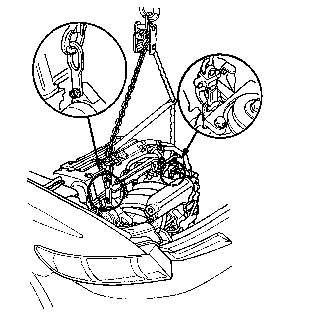
3. Attach the special tool to the threaded hole in the cylinder head.
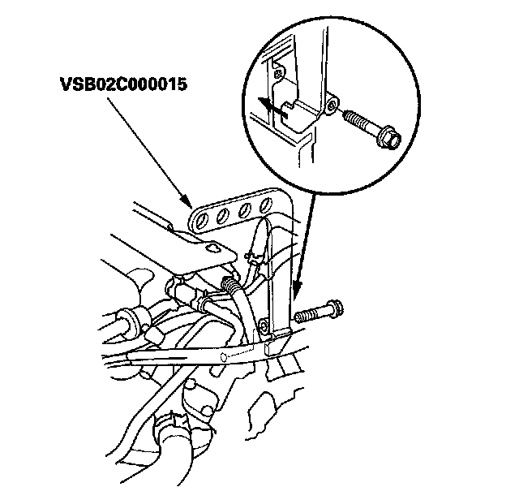
4. Install the front leg assembly (A), hook (B), and wing nut (C) from an A and Reds engine support hanger (AAR-T-12566) onto the engine hanger. Carefully position the engine hanger on the vehicle, and attach the hook to the forward hole in the engine hanger adapter (D). Tighten the wing nut by hand to lift and support the engine/transmission.
NOTE: Be careful when working around the windshield.
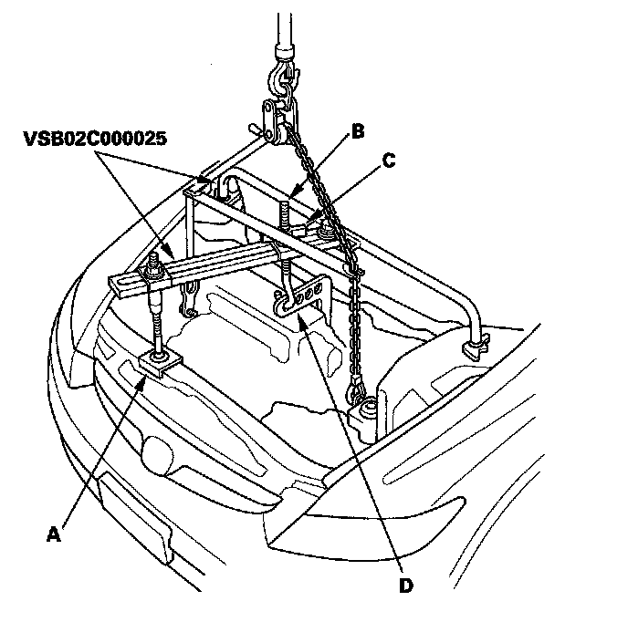
5. Loosen the upper torque rod mounting bolt (A).
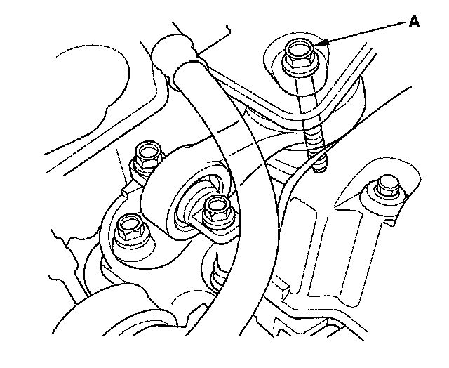
6. Tighten the new side engine mount bracket mounting bolt and nut.
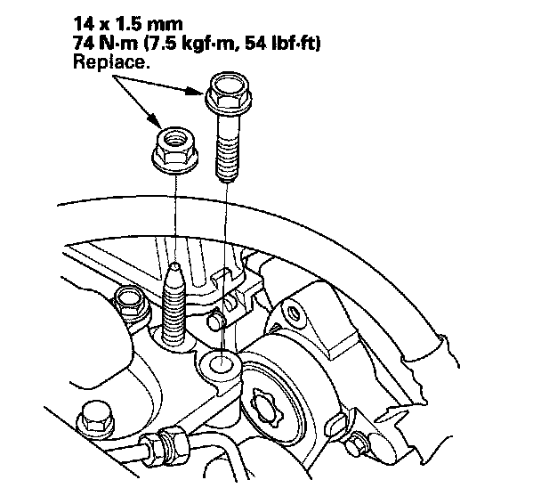
7. Tighten the new transmission mounting bolt and nuts.
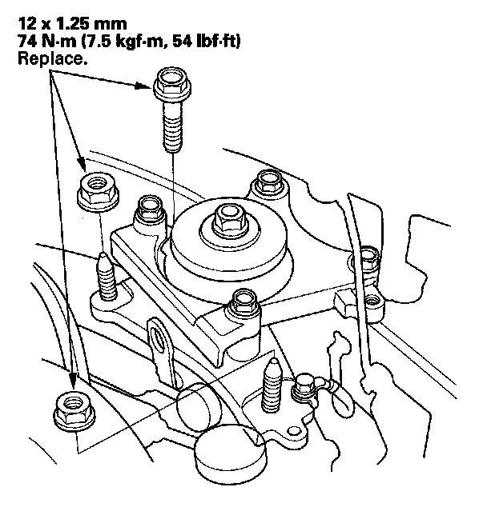
8. Remove the chain hoist.
9. Remove the special tool.
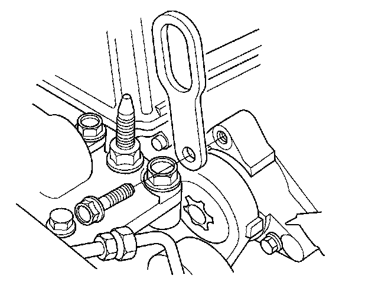
10. Raise the vehicle on the lift.
11. Set the front subframe adapter (A) to the front subframe and hang the belt of the front subframe adapter over the front of the subframe, then secure the belt with its stop.
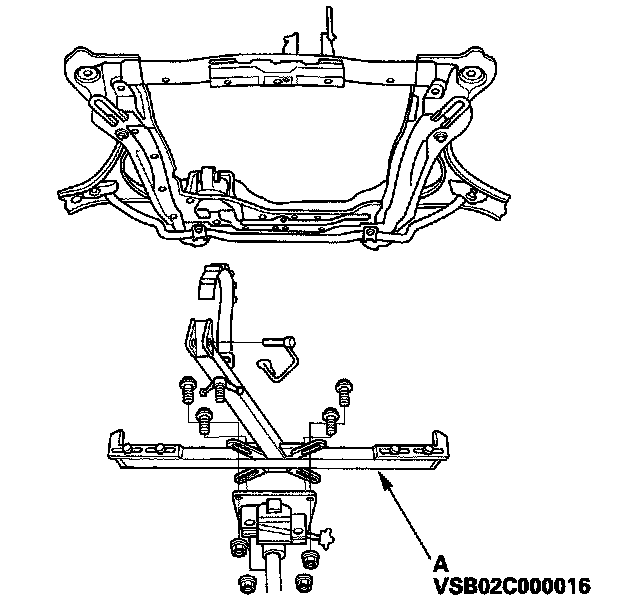
12. Line up the slots in the arms with the bolt holes on the corner of the jack base, and tighten the bolts, then lift the front subframe up to the body.
13. Loosely install the new front subframe mounting bolts.
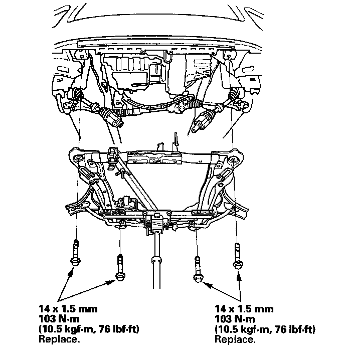
14. Align the front subframe reference marks (A) to the body (B), as noted during removal. Tighten the bolts on the front subframe to the specified torque.
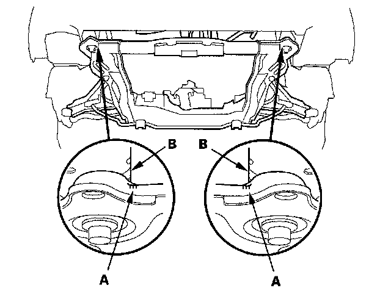
15. Remove the jack and front subframe adapter.
16. Tighten the new front subframe body mount bracket mounting bolts on both side.
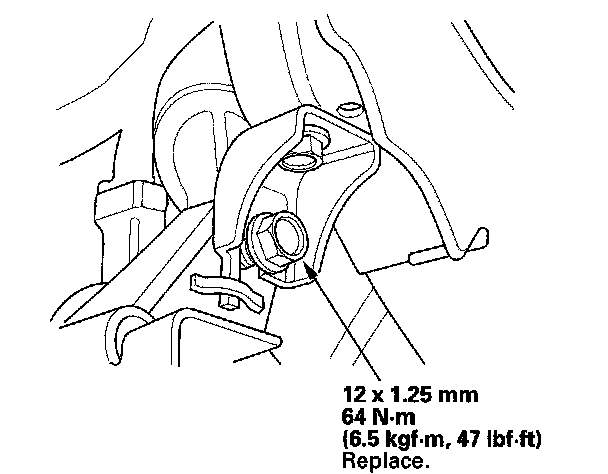
17. Install the lower torque rod, then tighten the new lower torque rod mounting bolts in the numbered sequence shown.
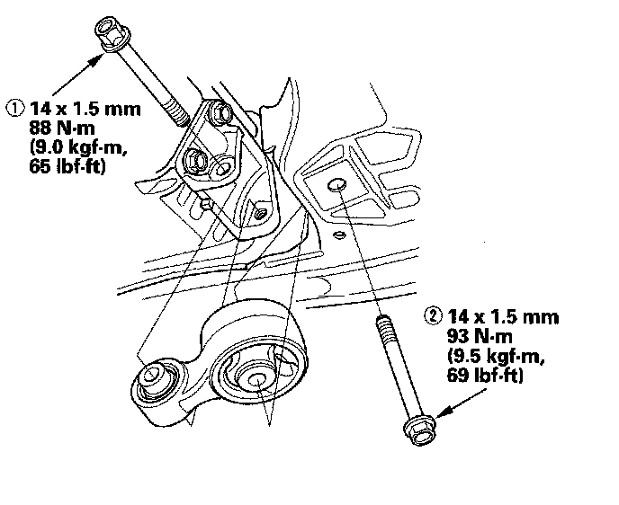
18. Loosely tighten the new front mount mounting bolt (A), then install the lower radiator hose to the clamp (B).
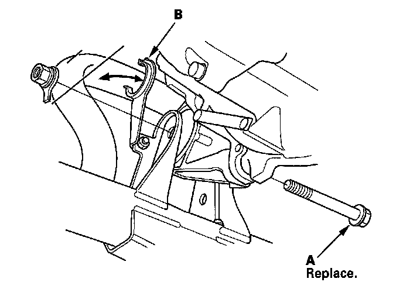
19. Lower the vehicle on the lift.
20. Remove the special tools from the engine and vehicle.
21. Tighten the upper torque rod mounting bolt.
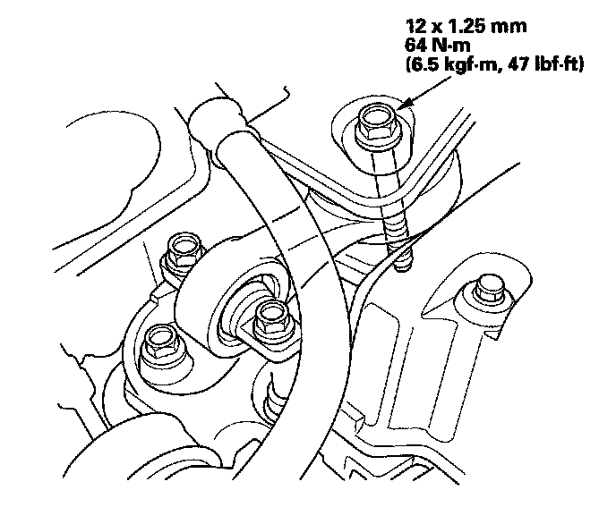
22. Raise the vehicle on the lift to full height.
23. Tighten the front mount mounting bolt.
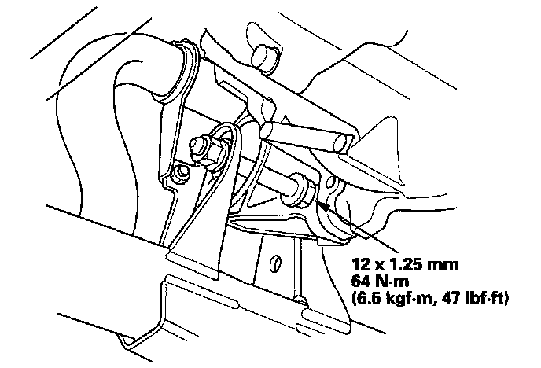
24. Install the A/C compressor (A), then connect the A/C compressor clutch connector (B).
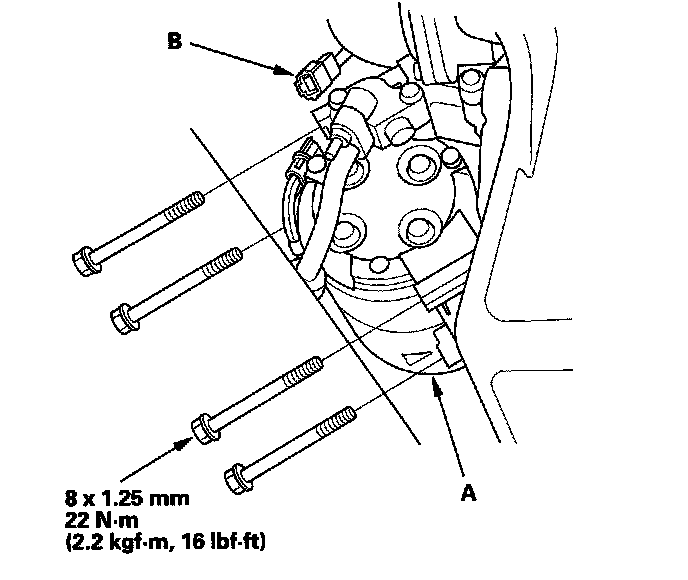
25. Install the stiffener (A), then tighten the steering gearbox mounting bolt (B) and stiffener mounting bolt (C).
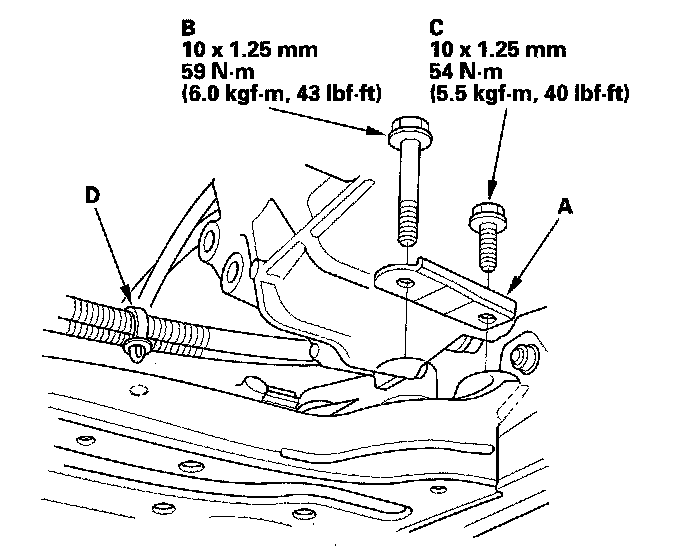
26. Install the harness clamp (D) to the subframe.
27. Install the steering gearbox bracket (A).
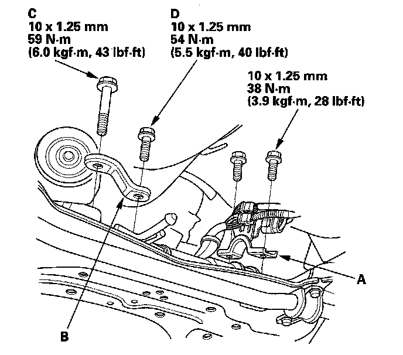
28. Install the stiffener (B), then tighten the steering gearbox mounting bolt (C) and stiffener mounting bolt (D).
29. Install a new set ring on the end of each driveshaft, then install the driveshafts. Make sure each ring "clicks" into place in the differential and intermediate shaft.
30. Connect the lower arms to the knuckles.
31. Connect the stabilizer links.
32. Install the three way catalytic converter (TWC) (A). Use new gaskets (B) and new self-locking nuts (C).
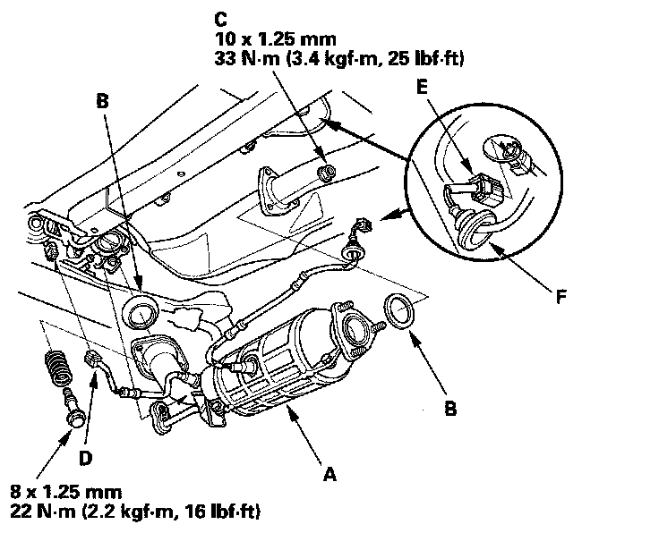
33. Connect the air fuel ratio (A/F) sensor connector (D).
34. Connect the secondary heated oxygen sensor (secondary H02S) connector (E), then install the grommet (F).
35. Install the splash shield.
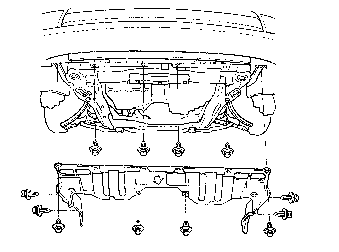
36. Lower the vehicle on the lift.
37. Install the heater hoses.
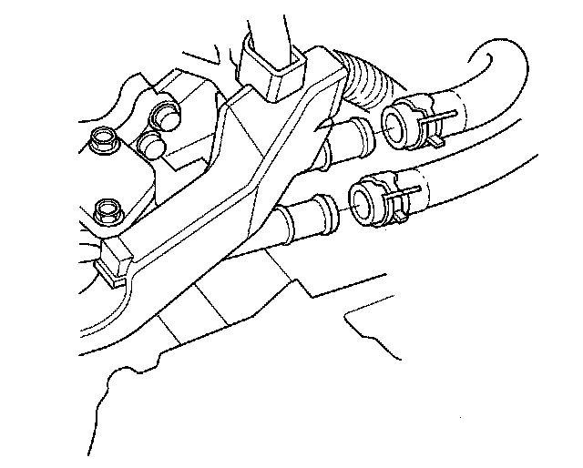
38. Install the radiator.
39. Install the idler pulley base.
40. Install the drive belt.
41. Install the air cleaner housing bracket.
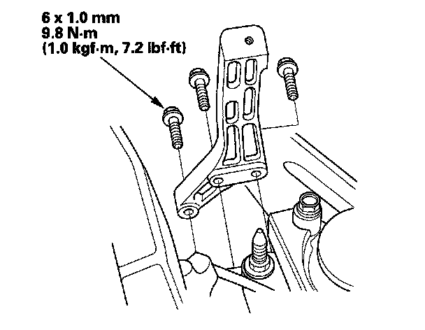
42. Install the shift cable.
43. Install the clutch slave cylinder, and clutch line bracket mounting bolt.
44. Connect the fuel feed hose, then install the quick-connect fitting cover (A).
45. Install the evaporative emission (EVAP) canister hose (A) and brake booster vacuum hose (B).
46. Install the engine cover.
47. Connect the engine control module (ECM) connectors (A) and engine wire harness connector (B).
48. Install the harness clamps (C).
49. Install the ECM (A), then install the ECM cover (B).
50. Install the battery cables (A) to the under-hood fuse/relay box.
51. Install the harness clamp (B).
52. Install the resonator (A).
53. Connect the connector (B), and install the harness clamp (C).
54. Install the under-cowl panel.
55. Install the air cleaner assembly.
56. Install the front wheels.
57. Install the battery. Clean the battery posts and cable terminals, then assemble them, and apply grease to prevent corrosion.
58. Check that the transmission shifts into gear smoothly.
59. Inspect for fuel leaks: Turn the ignition switch ON (II) (do not operate the starter) so the fuel pump runs for about 2 seconds and pressurizes the fuel line. Repeat this operation two or three times, then check for fuel leakage at any point in the fuel line.
60. Refill the engine with engine oil.
61. Refill the transmission with fluid.
62. Refill the radiator with engine coolant, and bleed air from the cooling system with the heater valve open.
63. Do the ECM reset procedure.
64. Do the crankshaft position (CKP) pattern clear/CKP pattern learn procedure.
65. Inspect the idle speed.
66. Inspect the ignition timing.
67. Check the wheel alignment.
68. Enter the anti-theft code for the audio system and the navigation system (if equipped), then enter the audio presets.
69. Set the clock.